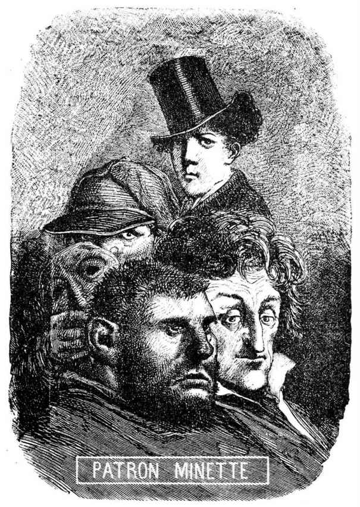

人类的各种社会全有剧院里所说的那种“第三地下层”。在社会的土壤下面，处处都有活动，有的为善，有的为恶。这些坑道是层层相叠的。有上层坑道和下层坑道。在这黑暗的地下层里，有一个高区和一个低区，地下层有时会崩塌在文明的底下，并因我们的不闻不问和麻木不仁而被践踏在我们的脚下。《百科全书》在前一世纪，是个坑道，几乎是露天的。原始基督教义的一种未受重视的孵化设备——黑暗，它只待时机成熟，便在暴君们的座下爆炸开来，并以光明照耀人类。因为神圣的黑暗有它潜在的光。火山是充满了黑暗的，但有能力使烈焰腾空。火山的熔液是在黑暗中开始形成的。最初举行弥撒的地下墓道，不仅只是罗马的地下建筑，也是世界的坑道。[1]
在社会建筑的下面有着形形色色的挖掘工程，犹如一栋破烂房屋下的错综复杂的奇迹。有宗教坑道、哲学坑道、政治坑道、经济坑道、革命坑道。有的用思想挖掘，有的用数字挖掘，有的用愤怒挖掘。人们从一个地下墓道向另一个地下墓道互相呼应。种种乌托邦都经过这些通道在地下行进。它们向各个方向伸展蔓延。它们有时会彼此接触，并相互友爱。让-雅克[2]把他的尖镐借给第欧根尼，第欧根尼也把他的灯笼[3]借给他。有时它们也互相排斥。加尔文[4]揪住索齐尼[5]的头发。但是没有什么东西能阻止或中断这一切力量向目标推进的张力和活动，那些活动同时在黑暗中往来起伏，再起，并从下面慢慢改变上面，从里面慢慢改变外面，这是人所未知的大规模的蠕动。社会几乎没有意识到这种给它留下表皮、换掉脏腑的挖掘工作。有多少地下层，便有多少种不同的工程，多少种不同的孔道。从这一切在深处进行的发掘中产生出来的是什么呢？未来。
人们越往下看，所发现的活动者便越是神秘。直到社会哲学还能认识的一级，活动总还是好的，再下去，那种活动便可怕了。到了某一深度，那些洞窟孔道便不再是文明的精神力量能钻得进的，人的呼吸能力的限度已经被超出，魔怪有了开始出现的可能。
这下行梯阶是奇怪的，它的每一级都通到一个哲学可以立足的地下层，在那里，人还可以遇到一个那样的工人，有的是高明的，有的不成人形。在扬·胡斯[6]的下面有路德[7]，在路德的下面有笛卡儿，在笛卡儿的下面有伏尔泰，在伏尔泰的下面有孔多塞，在孔多塞的下面有罗伯斯庇尔，在罗伯斯庇尔的下面有马拉，在马拉的下面有巴贝夫[8]。并且这还没有完。再往下去，朦朦胧胧，在不清晰和看不见之间的分界线上，人们可以望见其他一些现在也许还不存在的人的黑影。昨天的那些是一些鬼物，明天的那些是一些游魂。智慧眼能隐隐约约地见到它们。未来世界的萌芽工作是哲学家的一种景象。
一个处于胚胎状态的鬼蜮里的世界，这是多么离奇的形象！
圣西门、欧文、傅立叶，也都在那里的一些侧坑里。
所有这些地下开路先锋几乎经常认为他们彼此之间是隔绝的，其实不然，有一条他们不知道的神链在他们之间联系着，虽然如此，他们的工作是大不相同的，这一些人的光和另一些人的烈焰形成对比。有的属于天堂，有的属于悲剧。可是，尽管他们各不相似，所有这些工作者，从最高尚的到最阴狠的，从最贤明的到最疯狂的，都有一个共同点：忘我。马拉能像耶稣一样忘我。他们把自己放在一旁，取消自我，绝不考虑自己。他们看见的是本人以外的东西。他们有种目光，这种目光搜寻的是绝对真理。最初的那个有整个天空在他的眼睛里，最末的那个，尽管他是多么莫测高深，在他的眉毛下却也还有那种苍白的太空的光。任何人，不问他是干什么的，只要他有这一特征，便应受到崇敬，这特征是：充满星光的眸子。
充满黑影的眸子是另一种特征。
恶从它开始。在眼睛阴森的人面前，想想吧，发抖吧。社会秩序有它的黑帮。
有那么一个地方，在那里，挖掘便是埋葬，光明已经绝灭。
在我们刚才所指出的那一切坑道下，在所有那些走廊下，在进步和乌托邦那整个庞大的地下管道系统下，在地下还更深许多的地方，比马拉还要低，比巴贝夫也还要低，再往下，再往下深入许多，和上面的那几层绝无关系的地方，还有最低的泥坑。那是个可怕的地方。也就是我们在上面所说的“第三地下层”。那是个一片漆黑的阴沟，瞎子的窟窖、地狱。
它通向深渊。
[1] 基督教在四世纪以前受到罗马帝国的仇视，教徒常被杀害，因而在地下墓道里秘密举行宗教仪式，宣传教义。地下墓道原是废弃了的采矿坑道。罗马人火化尸体，而基督教徒一定要埋葬尸体，废矿道便成了基督教徒的墓地。
[2] 让-雅克，卢梭的名字。尖镐应指他的笔。
[3] 有一次第欧根尼白天提着灯笼在雅典街上走，有人问他为什么，他说：“我找一个人。”
[4] 加尔文（Calvin，1509—1564），法国宗教改革运动的著名活动家，新教宗派之一——加尔文教的创始人，这一宗派反映了资本原始积累时期的资产阶级利益。
[5] 索齐尼（Socin，1525—1562），又译苏西努，意大利宗教改革家，倡导“上帝一位论”学说。
[6] 扬·胡斯（Jan Hus，约1369—1415），捷克宗教改革的领袖，布拉格大学教授，捷克民族解放运动的鼓吹者，被控为异教徒后被处以死刑。
[7] 路德（Martin Luther，1483—1546），宗教改革运动的著名活动家，德国新教（路德教）的创始人，德国市民等级的思想家。
[8] 巴贝夫（Babeuf，1760—1797），法国革命家，空想平均共产主义的著名代表，平等派密谋的组织者。